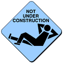
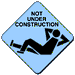
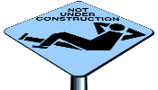

NOT UNDER CONSTRUCTION
Look, if you're going to put up a web page, at least make some effort
to get your work into a more or less working state. In defiance of the
ubuquitous yellow "under construction" signs (shouldn't they be orange?)
I have created, and will allow you to use, these icons to indicate that
your web page is finished. This doesn't mean you can't
work on it and improve it; it just means it's something you're proud of
and are prepared to the public.
Copy any of these images below and put them on your web server.



All images Copyright © 1995 Dan Wood. These images may be distributed
freely for any and all web sites, but may not be included on any graphics
compilation for which money is charged.